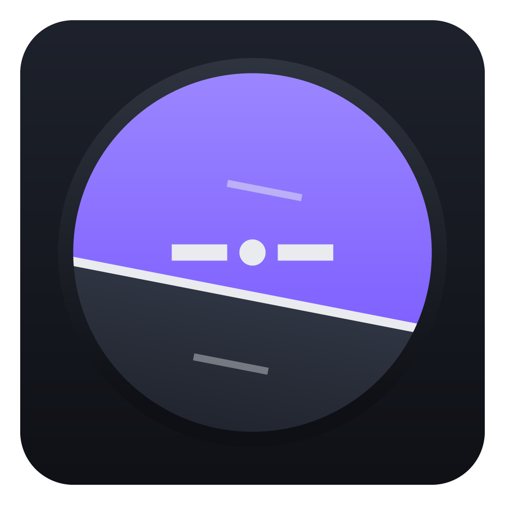
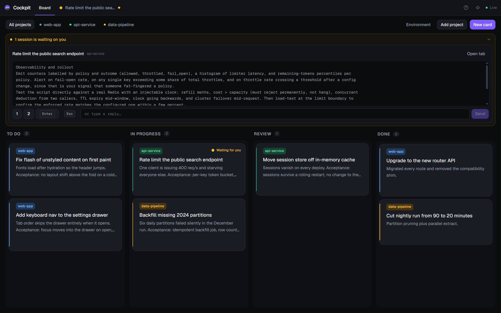
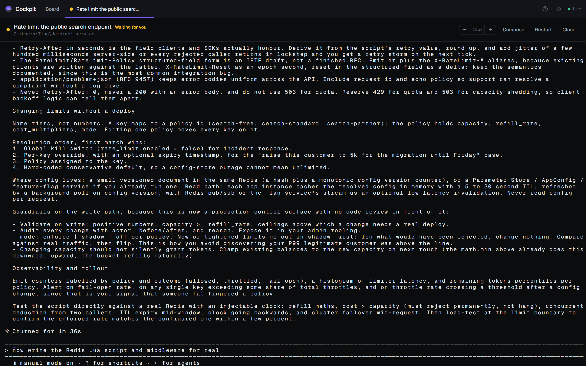

Cockpit runs real, interactive Claude Code sessions across all your repos, driven by a Kanban board.
Free and MIT licensed. Requires the claude CLI, installed and signed in.

Working across several repos means opening an editor, picking a workspace, starting Claude Code, pasting context, waiting, then repeating the whole ceremony to touch a different project. Cockpit collapses that into one window and one board.
Cockpit never clones anything. Point it at what is on disk, with a filesystem picker that knows which folders are git repos.
Hit Run and a session opens with that text pre-filled. Nothing is sent until you press Send, so you can edit it first.
The process lives in the backend. Switch tabs, navigate away, reload the page: it keeps running and the scrollback replays.
A quiet session badges its tab, updates the window title and chimes once. Not once per repaint, once per waiting episode.
The attention panel shows the real rendered screen and gives you 1 2 Enter Esc plus a reply box.
A read-only panel lists the skills, MCP servers and plugins a session in that project will actually have, read from Claude Code's own config.

| Platform | What you get |
|---|---|
| Windows | An installer, per-user, no admin prompt. Updates itself from GitHub Releases. Windows will warn about an unknown publisher because the build is not code signed: choose More info then Run anyway. |
| macOS | A dmg for Intel and Apple Silicon. It is unsigned, so macOS quarantines it and reports it as damaged. Clear the flag with xattr -dr com.apple.quarantine /Applications/Cockpit.app. Auto-updates do not work on unsigned macOS builds. |
| From source | npm ci --foreground-scripts && npm run app. Node 22.5 or newer. |
Cockpit is built and tested on Windows. The macOS code paths exist and the build is produced by CI, but nobody has yet run it on real hardware. Treat the Mac download as a preview and please report what breaks.
Cockpit listens on 127.0.0.1 only, and there is no login. That bind address is the security model, not an implementation detail.
A terminal served over HTTP is a remote shell the moment it is reachable off-machine, and the folder picker will happily enumerate your filesystem. Requests from other websites are rejected by an origin check, but anything that can already run code on your machine can reach it. Do not change the bind address without adding authentication first.